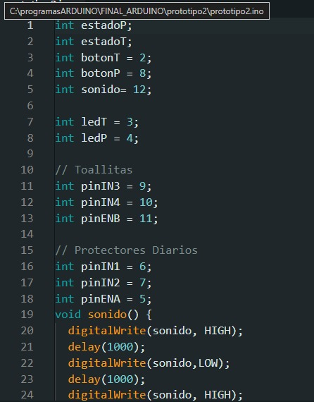
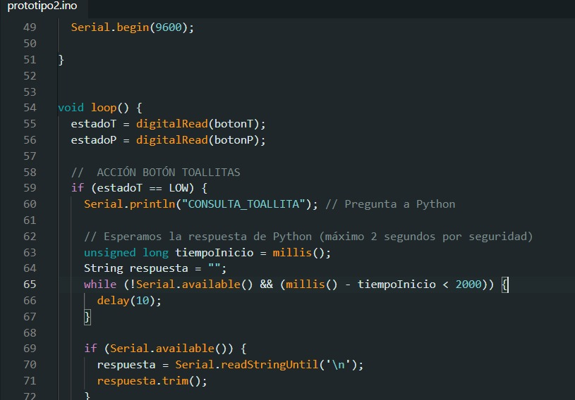
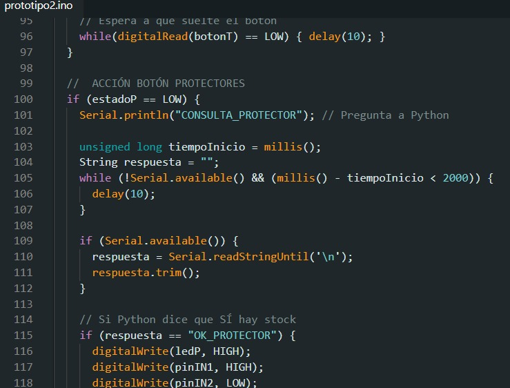
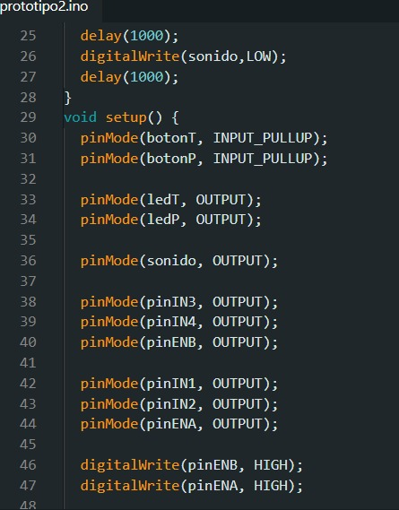
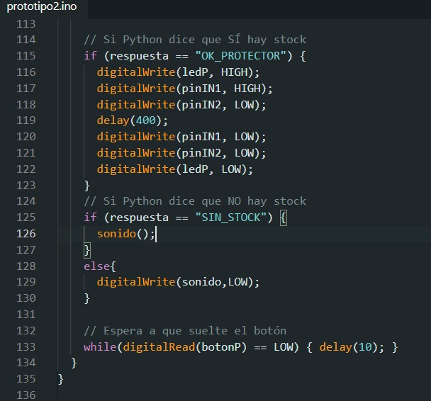
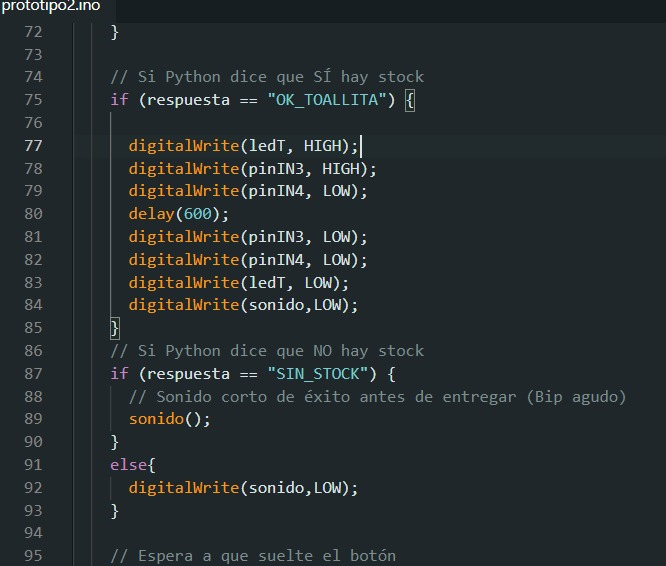

1. Portada e Introducción
Datos del Proyecto
- Proyecto: Máquina Expendedora de Productos de Higiene
- Curso / Grado: 7mo Programación, 7mo Informática
- Materia: Evaluación de Proyectos / Modelos y Sistemas
- Ubicación del Laboratorio: E.E.S.T N°1 José Ingenieros
Resumen del Proyecto
El proyecto consiste en el diseño y desarrollo de un prototipo de máquina expendedora automática de productos de higiene femenina, utilizando un Arduino Uno como sistema principal de control.
La máquina está diseñada para permitir que el usuario seleccione un producto mediante botones. Una vez realizada la selección, el Arduino procesa la señal recibida y activa el motor correspondiente, utilizando un módulo puente H para controlar su funcionamiento. El motor acciona un mecanismo que desplaza el producto y permite su salida de manera automática.
El sistema busca ser una propuesta económica, sencilla y funcional, que pueda ser utilizada como modelo para facilitar el acceso a productos de higiene femenina en lugares como escuelas, instituciones u otros espacios públicos.
Además, el proyecto permite aplicar conocimientos de programación, electrónica y automatización, integrando componentes de entrada, procesamiento y salida en un mismo sistema. De esta manera, se demuestra cómo una placa Arduino puede utilizarse para desarrollar soluciones tecnológicas destinadas a resolver necesidades de la vida cotidiana.
Objetivos
Objetivo General
Diseñar y desarrollar un prototipo de máquina expendedora automática de productos de higiene femenina, utilizando Arduino, botones y motores, capaz de entregar un producto seleccionado de manera automática, sencilla y controlada.
Objetivos Específicos
- Implementar un Arduino Uno como unidad principal de control del sistema.
- Utilizar botones como medio de interacción entre el usuario y la máquina.
- Programar el Arduino para detectar las diferentes selecciones realizadas.
- Controlar motores de corriente continua mediante módulos puente H.
- Diseñar un mecanismo que permita desplazar y entregar los productos de forma automática.
- Integrar correctamente los componentes electrónicos y la programación para obtener un sistema funcional.
- Aplicar conocimientos de programación, electrónica y automatización en un proyecto práctico.
- Desarrollar una alternativa de bajo costo que pueda facilitar el acceso a productos de higiene femenina en distintos espacios.
- Comprobar el funcionamiento del prototipo y detectar posibles mejoras para futuras versiones.
2. Requerimientos de Hardware y Software
Componentes de Hardware
| Hardware | Modelo / Valor | Cantidad | Función Principal |
|---|---|---|---|
| Microcontrolador | Arduino UNO | 1 | Procesamiento central de datos y control de I/O |
| Pila Externa/Bateria | Beston 650 Mah 9v | 1 | Energía externa para motores |
| Pulsador | PBS-11A/PBS-11B/PBS-33B | 2 | Envío de señales para la detección de una acción manual |
| Motor DC | - | 2 | Conversión de energía eléctrica a corriente continua en movimiento mecánico de rotación |
| Actuador Sonoro/zumbador | Buzzer Pasivo | 1 | Emisión de alertas auditivas según umbrales |
| Diodo LED Difuso 5mm | Azul/Naranja | 6 | Indicadores luminosos de estado |
| Puente H | LD89N | 1 | Controlar el sentido de giro y velocidad de hasta dos motores DC |
| Protoboard | 830 puntos (mediana) | 1 | Base para interconexión y pruebas de circuito |
| Cables de Conexión | Cable de alimentación Arduino | 1 | Transmisión de señales y alimentación |
Herramientas de Software
- Entorno de Desarrollo (IDE): Arduino IDE v2.x.
- Diseño y Diagramación de Circuitos: Tinkercad Circuits.
- Monitorización Serie: Serial Begin integrado de Arduino IDE.
3. Arquitectura del Hardware (Circuito)
Tabla de Mapeo de Pines (Pinout)
| Componente | Pin del Componente | Pin de Arduino | Tipo de Señal |
|---|---|---|---|
| Botón de toallitas | Un Terminal | D2 | Digital Entrada |
| Botón de protectores diarios | Un Terminal | D8 | Digital Entrada |
| Led_T Amarillo | Ánodo (+) | D3 | Digital Salida |
| Led_P Azul | Ánodo (+) | D4 | Digital Salida |
| Buzzer | (+) | D12 | Digital Salida |
| Puente H L298N | IN1 | D6 | Digital Salida |
| Puente H L298N | IN2 | D7 | Digital Salida |
| Puente H L298N | ENA | D5 | Digital Salida / PWM |
| Puente H L298N | IN3 | D9 | Digital Salida |
| Puente H L298N | IN4 | D10 | Digital Salida |
| Puente H L298N | ENB | D11 | Digital Salida / PWM |
| Comunicación con Python | TX / RX | USB | Comunicación Serie |
Código Fuente
Imágenes del código fuente desarrollado para el Arduino.






Manual de Usuario
1. Introducción y Propósito del Sistema
La Máquina Expendedora de Productos de Higiene Femenina es un sistema automatizado diseñado para facilitar el acceso rápido, sencillo y autónomo a insumos de higiene personal (toallitas y protectores diarios) en espacios educativos e institucionales.
2. Requisitos Previos y Verificación Inicial
- Comprobar la conexión eléctrica de la batería de 9V para motores y la conexión del puerto USB/Arduino al sistema principal.
- Verificar que los LEDs indicadores y las luces del módulo estén encendidos en estado de reposo/standby.
3. Guía de Uso Paso a Paso (Interacción del Usuario)
- Paso 1: Identificar el producto a seleccionar (Toallitas con Botón T o Protectores Diarios con Botón P).
- Paso 2: Presionar una sola vez el pulsador correspondiente.
- Paso 3: Respuesta del sistema:
- Si HAY STOCK: El LED indicador correspondiente se encenderá y el motor despachará el producto en el depósito de salida.
- Si NO HAY STOCK: Se emitirá una señal sonora de alerta (Buzzer) avisando que el producto no está disponible.
- Paso 4: Retirar el producto dispensado.
4. Señales del Sistema (Luces y Sonidos)
| Indicador | Tipo | Estado / Condición |
|---|---|---|
| LED Amarillo (Led_T) | Visual | Encendido |
| LED Azul (Led_P) | Visual | Encendido |
| Buzzer | Sonoro | Intervalos continuos |
5. Mantenimiento y Resolución de Problemas para el Operador
- ¿Qué hacer si no dispensa el producto? Comprobar la alineación del mecanismo helicoidal/empujador y verificar el nivel de carga de la batería de 9V que alimenta los motores.
- ¿Qué hacer si el sistema no responde al pulsar un botón? Verificar la conexión del cable USB de comunicación serie con el servidor Python y confirmar que el programa de control se encuentra activo.
- ¿Cómo recargar el stock de los compartimientos de productos? Abrir el gabinete de almacenamiento, colocar las unidades de toallitas y/o protectores en los canales correspondientes asegurando su correcta orientación, y actualizar el conteo en el sistema de gestión.